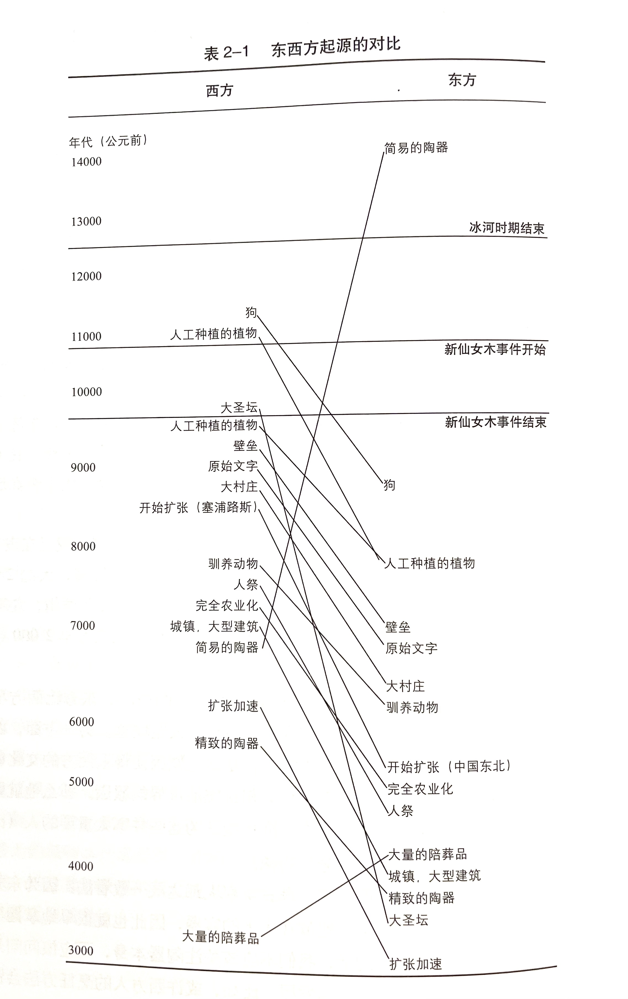
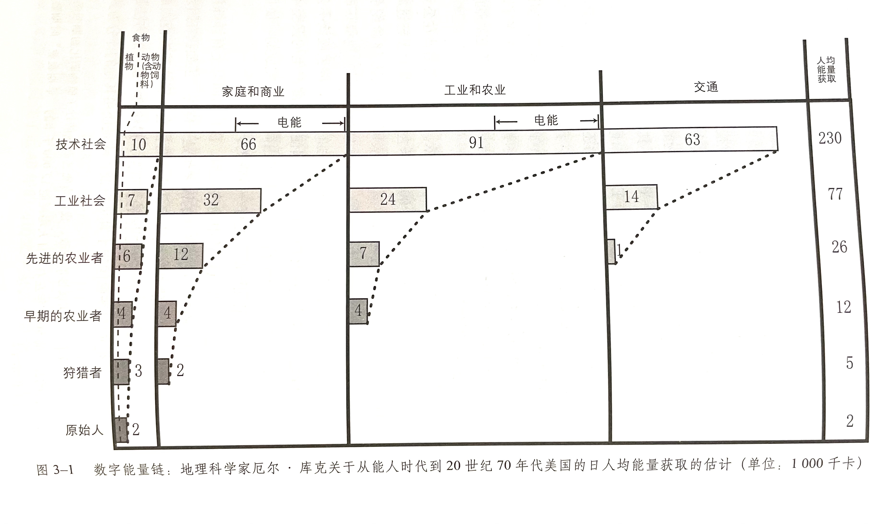
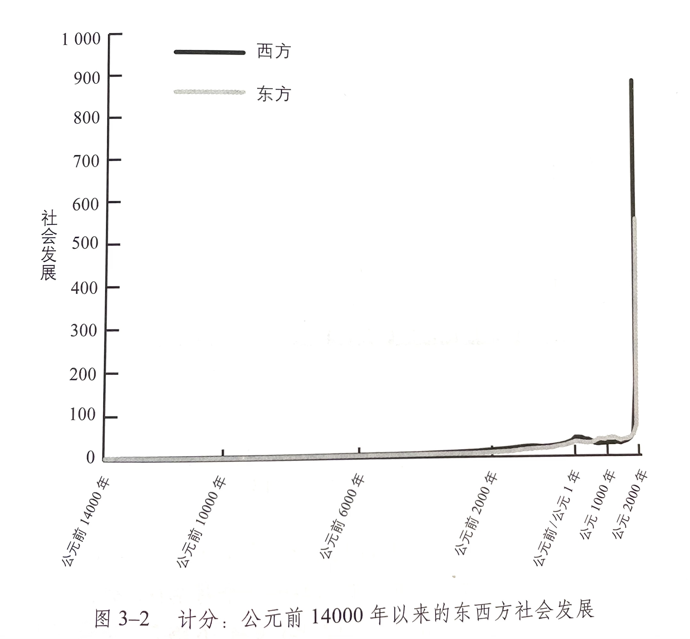

前言
从历史的形态中把握未来 XXVII 在本书中，我认为，西方缘何主宰世界的问题实际上是关于社会发展的问题。这里的社会发展是指社会达成目标的能力，即社会通过影响物理、经济、社会、智力等环境以达到相应目标。19~20世纪，西方观察家讲社会发展视为理所当然的好事。他们含蓄或者公开地说，发展就是进步（或者进化，或者历史），而进步——不管是向着上帝、富裕还是人民的天堂——是生活的意义。现在，这些意义似乎不那么显而易见了。很多人感到，社会发展过程中带来的种种弊端，如环境恶化、战争、不平等和幻想破灭，要远比收益多得多。
懒惰、恐惧和贪婪是人类进步的阶梯吗 XXVIII "历史：名词，指一种往往虚假的记录，记录的大多是无关紧要的事情。这些事情由统治者和军人引起，这统治者大多是无赖，而军人往往是傻子。"安布鲁斯·比尔斯（Ambrose Bierce）关于历史的这条风趣的定义，有时你不得不赞同：看起来历史似乎仅仅是一件讨厌的事情接着另一件，是天才和傻子，暴君和浪漫派、诗人和盗贼混杂在一起的一团乱麻，或创造非凡之举，或在堕落边缘挣扎。
XXIX 第一种工具是生物学，生物学告诉我们，真实的人类是什么——聪明的猿猴。我们是动物王国的一部分，而动物王国又是从大型人猿到变形虫的更为广袤的生命帝国的一部分，这一明显的事实带来了三个重要结果。第一个结果是，和所有生命形式一样，我们之所以能够生存是因为我们从环境中摄取能量，并且用此能量繁衍生息。第二个结果是，能像所有智慧的动物一样，我们有好奇心。我们总是在修修补补，思索着哪些东西能吃，哪些东西能玩，哪些东西能加以改进。
. 这里就需要引入第二种工具——社会学。社会学同时告诉我们，什么导致了社会变化，社会变化又带来了什么，聪明的猿猴围坐在一起修修补补是一回事儿，他们的奇思妙想流行开来改变社会又是另一会事儿。
XXX 事实上，本书随后将提出我自己的一个"莫里斯定理"，这个定义版本较为复杂："导致变化的原因是懒惰、贪婪、恐惧的人们寻求更为简便易行、获利丰厚、安全可靠的做事方法。他们对正在做的事情知之甚少。"历史告诉我们，一旦施加压力，就会产生变化。
懒惰、贪婪、恐惧的人们在保持舒适、尽可能少工作和获得安全之间寻求令自己满意的平衡。但事情并没有到此结束，因为人们繁衍生息和摄取能量将不可避免地使他们所获取的资源（这里既包括物质资源，也包括智力资源和社会资源）承受压力。在社会的不断发展之中，也潜藏着阻止社会进一步发展的力量。我把这称为"发展的悖论"。成功带来新问题；解决这些问题后，更多新问题又会产生。正如人们说的那样，生活是个眼泪之谷。
. 在此之间，生物学和社会学解释了大部分的历史形态——为何社会有时候会发展，为何有时发展得快，有时发展得慢，为何社会有时会崩溃。但这些生物学和社会学定律是放之四海而皆准的，它们告诉我们人类这个整体是什么样的，却没有告诉我们，为何一处之人与别处之人行事如此不同。为了解释这一问题，我会贯穿全书来论证，我们需要第三种工具：地理学。
地理因素也会如此重要 XXXV 当17世纪大西洋的重要性日渐凸显的时候，那些处于开发利用大西洋最佳位置的人们——最初主要是英国人，后来还有以前被英国殖民的美国人——创造了全新种类的帝国和经济，并释放出蕴藏在化石燃料中的巨大能量。我将会论证，这正是西方主宰世界的原因。
第一部分
第一章 溯源：东方和西方之前的漫长岁月
西方是什么 4 戴维斯说："对于西方的定义，它的辩护者们可以以任何一种他们认为恰当的方式进行。"戴维斯的意思是，当我们着手定义西方的时候，"西方文明本质上是知识构建的混合物，可以被用来增进作者们自己的利益。"
如果戴维斯的观点是正确的，那么，关于西方缘何主宰世界的问题不过是任意地选取某一价值观来定义西方，声称某些特定国家是这一价值的典范，然后将这些国家与一些同样任意"非西方"国家相比较，以得出我们想要的任何自圆其说的结论。任何人如果不同意我们的观点，可以直接选用一种不同的价值观作为西方性的典范，拿一些不同的国家来代表这一价值观，再选取一个不同的对照组，那么自然就会得出一个不同的但是同样自圆其说的结论。
最早的西方人：尼安德特人 13 至此，我们终于有了些无可争议的事实。到了60万年以前，当海德堡人登上历史舞台，北京人统治者周口店的栖息地之时，在旧世界的东方和西方存在着千差万别的人种：在东方有脑容量较小的直立人，在西方则有脑容量较大的前人和海德堡人。
欧洲人的祖先和亚洲人的祖先 25 1987年，遗传学家丽贝卡·卡恩（Rebecca Cann）领导的小组发表了一项研究，研究全世界在世的人的线粒体DNA。他们在数据中区分了大约150种类型的线粒体DNA，并且意识到他们不管怎样处理统计数据，总会得到三个关键结果：第一，非洲比世界其他地方基因更为多样；第二，世界其他地方基因多样性仅仅是非洲基因多样性的子集；第三，最深远也就是最古老的线粒体DNA谱系都来自非洲。
. 在对线粒体DNA的变异率进行标准估测后，他们得出结论，"非洲夏娃"生活在20万年以前。
26 基因数据似乎完全支持这样一个论断：每个今天在世的人都是非洲人的后代，没有人的血管里流淌着尼安德特人或者北京猿人的血液。
27 事实上，种族主义理论将西方主宰地位归结为生物学因素是毫无根据的。不管在哪里，群体的人们总是大体相同的，我们从非洲祖先那里继承了相同的躁动不安、善于创造的头脑。生物学本身无法解释西方的主宰地位。
第二章 西方领先的世纪
全球变暖给人类带来了灾难性的影响 34 重力能构成了宇宙。它先是把原始的宇宙汤变成了氢和氮，然后再把这些纯元素变成恒星。我们的太阳就像一个巨大的核反应堆，将重力能变为电磁场，地球上的植物则通过光合作用把一小部分电磁转化成了化学能。动物吃掉植物，发生新陈代谢，把化学能变为动能。太阳和其他星球之间的相互引力决定了地球的运行轨道，从而决定了我们将得到多少电磁能，植物将产生多少化学能以及动物将从中转化多少动能。这些又决定了其他一切事物。
懒惰、贪婪创造了西方特色的生活方式 37 在本书的前言部分，我将科幻作家罗伯特·安森·海因莱因的俏皮话"懒人想寻找更简单的方法解决问题"，于是就有了"进步"扩展为一个社会学理论，即历史是因为懒惰、贪婪和恐惧的人们（他们往往不知道自己在做什么）为了获得更简单、更有利益和更安全的生活而产生的。这个准则在冰河末期对侧翼丘陵地区的人们产生了巨大影响，创造了具有西方特色的生活方式，使得西方的社会发展快于地球上的任何一个地方。
41 事实上，我们不妨追随古希腊哲学家赫拉克利特的思想——在阿西莫夫成为作家前的2500年——他认为，"人不能两次踏入同一条河。"这是一个著名的悖论：当你第二次踏进这条河的时候，是新的水流而不是原先的水流在流淌，它已经不是你上次踏进去的那条河了。
变化的天堂：人类生产方式的巨变 45 当妇女在种植植物的时候，男人（很可能是男人）开始养殖动物。到了公园前8000年，牧羊人在现在的伊朗西部成功养殖了山羊，山羊的基因后来得以进化，个头变得更大，性情变得更加温顺。公元前7000年前，牧人把欧洲野牛驯养成了今天温顺的奶牛，把业主驯养成了家猪。
47 祖先留下了财产，使活着的人不至于饿死，活着的人因此对他们表示敬意。财产的传递很可能是通过神圣的宗教仪式进行的，这样就能说明为什么有的人比其他人拥有得更多。
48 无论正确与否，等级制度在家庭内部发展得最快。我已经说过，在采集狩猎社会，男人和女人各自扮演不一样的角色。男人主要进行狩猎活动，而女人主要负责采集活动。不过现代研究表明，驯养进一步加剧了性别之间的分工，把妇女限制在了家里。
49 为了能够住在一起，人们不得不学会处理人与人之间的暴力。那些能够处理这些暴力的人将发展得很好，并且能够利用暴力从其他部落夺取物品。
猜测与预言：东西方的生产活动对比 57 至于原因，进化学家和地理学家贾雷德·戴蒙德已经在他的经典著作《枪炮、病菌与钢铁》中做出了有力的解释。戴蒙德认为，自然是不公平的。侧翼丘陵区比世界上其他地方早几千年出现农业，不是因为那里的人们特别从，而是地理因素使然。
戴蒙德认为，虽然现在地球上约有20万种植物，但是只有几千种是可以食用的，其中只有几百种可以人工种植。
烧煮和烘烤，头颅和坟墓：东西方的其他不同之处
68 要进行比较，对象必须是有完整功能的文化，进而不是脱离背景的零碎习俗，因为即使是相同的行为，在不同的背景下也会有不同的意义。
第三章 测量过去，验证未来
我们需要测量什么 77 正如联合国经济学家们，我们应该遵循爱因斯坦的规则。指数应该衡量尽可能少的社会维度（尽可能简单），而且抓住前文定义的社会发展的最基本特征（不能过于简单）。我们所衡量的每个社会维度都应该符合六项基本标准。第一，必须具有相关性。也就是说，必须与社会发展有所关联。第二，必须具有文化独立性。例如，我们或许认为文学艺术作品的质量是衡量社会发展的有用参数，可是我们对此类参数的判断具有严重的文化局限性。第三，这些特征必须相互独立。譬如，如果选用国家人口总数和财富总量作为特征，我们就不能使用人均财富作为第三个特征，因为这是可以由前两个特征推算出来的。第四，必须有足够的档案记录。由于是回顾几千年前的事，这一点的确很重要。因为各个特征可供使用的证据数量差距很大。尤其是年代久远，我们根本无法了解某些有用的特征。第五，必须具有可信性。也就是说，专家们大都同意证据的意义和价值。第六，必须具有便捷性。这或许是标准中最不重要的一项，可是证据越是难以获得，或计算结果所需的时间越长，该特征的可用性也就越小。
任何特征都不是十全十美的。我们选择的每个参数都不可避免地会在这几项标准上表现各有优劣。可是在花了几年时间研究这些参数之后，我选定了四个特征，在这六项标准上都表现不错。虽然他们加在一起，在为东西方社会提供一个综合性的描述上，较之联合国利用寿命、教育和收入特征告诉我们有关冰岛、挪威或塞拉利昂的信息也好不了多少，但是，它们确实是社会发展的一个很好的缩影，向我们展示了为了理解西方统治世界的原因所需要解释的社会发展的长期模式。
78 我选择的第一个特征参数是能量获取。倘若不是从动植物中获取能量以养活很少耕作的士兵和海员，从风力和煤炭中获取能量以发动船只驶向中国，从炸药中获取能量向中国的驻守不对开火，英国根本无法在1840年抵达定海，大肆破坏。
. 我们需要一个既与组织能力紧密相关，同时又便于测量的替代参数。
我选择的是城市化。
79 对我们来说，一个社会最大城市的规模不仅可以在过去几百年的官方数据中查找，哈可以追溯考古学记录，因而能够对其自冰河时期以来的组织能力水平有个大致的认识。
. 信息处理对社会发展十分关键，所以我把它作为第三个特征。
. 最后一点是发动战争的能力，很遗憾，这点也同样重要。就算英国获取、组织和传递低能量的能力再强，1840年事件之所以能够发生，还是因为他们能够把这三个参数转化为破坏力。
. 正如毛主席的名言："每个共产党员都应该懂得这个真理：'枪杆子里出政权'"19世纪40年代之前，没有哪个社会可以把军事力量投射到整个地球，讨论由谁"统治"也是毫无意义的。可是，1840年以后，这可能成了世界上最重要的问题。
. 为社会发展制定指数更像是电锯艺术，用树干雕刻出灰熊来。毫无疑问，这种粗糙和敏捷的社会程度会让爱因斯坦的头发更白，不过对不同的问题，需要规定不同的误差范围。对于电锯艺术家来说，唯一重要的问题就是树干像不像熊。
. 实际上，激励历史学家们做这些事可能就是指数起到的最大作用了。可争辩的余地还很大：不同的特征、不同的计分方式可能会更有效。但是，用数字说话，我们就必须关注错误的来源，以及修正的办法。这可能不像天梯物理学那样精准，但总比在黑暗中到处乱转要好得多。
如何进行测量 80 坚持最简原则，把2000年可达到的社会发展指数的最大值设定为1000分，在平均分配给我提出的四个特征。
81 大多数地理学家认为，在2000年，世界上最大的城市是拥有2670万人口的东京。那么，东京在组织力，或者说城市化参数上得满分250分，这也就意味着计算其他城市得分时，1分需要106800的人口（即250分除以2670万）。
. 再来谈谈能量的获取，该特征提出了截然不同的问题。关于能量的获取，最简单的方法是考虑人均能量获取，用每日获取能量的千卡数来测量。根据与城市化特征相同的步骤，从2000年开始，美国每日人均获取能量约228000千卡。这个数字占据历史水平最高，得满分250分（本章前面提过，我所关注的并不是评判我们掌控能源、建造城市、交流信息和发动战争的能力，只是对其测量而已）。2000年，东方最高人均能量获取量是日本的104000千卡，得113.89分。
82 即便是20世纪技术最落后的采猎社会，食物和非食物来源总量每天至少也有3500千卡。考虑到气候更加寒冷，他们冰河时期末期的远祖们每天肯定需要近4000千卡，也就是至少4.25分。
. 1971年，《科学美国人》杂志的编辑们邀请地球学家厄尔·库克（Earl Cook）写一篇名为《工业社会的能量流》的文章。文章中包含一个图，现实了对采猎者、早期农耕者（指第二章中提过的公元前5000年西南亚农民）、后期农耕者（1400年左右的欧洲西北部农民）、工业人群（1860年左右的欧洲西部），以及后20世纪"科技"社会的人均能耗的推测，能耗方式分成四类：食物（包括供食用的家畜的饲料），家庭商贸，工业和农业，以及交通运输（见图3-1）。
84
85 50年前，哲学家卡尔·波普尔（Karl Popper）主张科学的进步是"推测与辩驳"的过程，遵循之字形路线：一个研究者抛出一个观点，其他学者争先恐后地进行反驳，在这个过程中提出更好的观点。我认为，这一过程同样适用于历史。我相信任何符合证据的指数得出的模式都会与我的差不多，但如果我错了，其他人发现这个计划有不足之处，那就希望我的失败能鼓励他们找到更好的答案。再借用一次爱因斯坦的话，"对任何理论来说，其最好的命运......莫过于能为一个更全面的理论的提出指明方向。"
测量的时间和地点 . 从公元前14000~前4000年，社会发展每1000年测量一次。从公元前4000年~前2500年，证据的质量有所提高，改变也有所加快，因此我每500年测量一次。在公元前2500~公元1250年，每250年测量一次，最后从公元1400~2000年，每个世纪测量一次。
. 不过，要为已知的信息标注日期，较之我所提出的时间范围，很难有更准确的方法了。我并不想把这个问题置之不理，在第四章到第十章的叙述中将会填补尽可能多的空白，可是此处用到的框架在我看来确实为实用性和准确性提供了最好的平衡。
. 第二个问题是在哪里进行测量。当你阅读前面的内容时，或许会吃惊我在给"西方"和"东方"生成数字时对自己所指的世界的某个部分会如此含蓄。有时我说的是美国，有时是英国，有时是中国，有时是日本。在第一章里，历史学家彭慕兰抱怨比较历史学家们常常歪曲了对西方统治世界原因的分析，他们草率地把面积很小的英国和领土辽阔的中国进行比较，然后就下结论说西方在1750年就开始领先于东方了。
86 当解释西方规则时，最重要的信息一般来自比较各个地区最发达的部分，由最密集的政治、经济、社会和文化交流联系起来的核心地带。社会发展指数需要测量和比较的是这些核心地区内部的变化。
. 从1400年起，核心地区一直在如今伊拉克、埃及和希腊组成的三角形区域里。从1400年起，核心区域不断向西北方向移动，首先在意大利北部，然后到西班牙和法国，再扩大到囊括英国、比利时、荷兰和德国。到1900年，核心区域横跨大西洋；2000年，固定在了北美。东方的核心直到1850年之前一直保持在黄河长江地区，尽管在公元前4000年左右中心向北部黄河流域的中原转移，公元500年后又转向南方的长江流域，1400年之后又逐渐转向北方。到1900年，核心区域扩展到日本，2000年在中国的东南部。
英国工业革命：三分靠判断，七分靠运气？ 87 这个图看起来很让人失望，但事实上却告诉了我们两件十分重要的事。第一，东西方社会发展并没有太大差别。以我们所观察的尺度看，二者在历史上大多数时候都无法区分。第二，过去的几个世纪里发生了深刻的变化，是迄今史上最迅猛、最巨大的转变。
89 政治家和广告商们已经把数据误导人们发展成了一项精湛的艺术。早在一个半世纪之前，英国首相本杰明·迪斯雷利就曾有感而发，"谎言有三种：无伤大雅的小谎，糟糕透顶的大谎和统计数字。"
90 政治家和统计学家们并不总是在撒谎，只是根本没有一种完全中立客观的方式可以表现政治和数字。每句新闻陈述、每个图标，都强调了事实的某些方面，而低估了另外一些方面。
第二部分
第四章 后来居上：东方领先的世纪
伊拉克地区：逝去的辉煌 101 经济学家有时候把这个过程叫做探索后发优势。但人们将一项适用于发达核心地区的技术用于欠发达的边缘地区时，他们改善这项技术有时候能使这项技术得到更好的应用，以至于边远的确变成了新的核心区。
103 美索不达米亚人发明了管理、会议和备忘录 ——对现在很多人来说，这些东西是祸根，但却是人类成就的标志。然而，在接下来的几章中我们就会更清楚，这些事物往往是社会发展最重要的动力。组织促使侧翼丘陵地区的村庄、黄河两岸的村庄成为城市、国家和帝国；组织失败则导致这些城市、国家和帝国的失败。组织的有些管理者是我们故事中的英雄，有些也是恶棍。
105 几乎对于每个人来说，国家的崛起意味着自由的丧失，但是在艰难的时代，这是成功的代价。与国家形成钱的社会相比，付出如此代价的社会能聚集更多的人口、财富和权力。
埃及的法老为什么如此成功 106 挖掘出的坟墓表明，上埃及的村庄首领既要管理军事，又要管理宗教事务。成功的首领在村庄获得更多的土地，变得越来越富有，而失败的首领不知去向。
荒野西部：核心地区的分裂和斗争 110 当我们问是谁或者是什么扰乱了社会发展时，我们会得到一个惊人的答案：这可以归咎于社会发展本身。
人们是这改变命运的主要方式往往是传播信息、传递物品和四处迁移，因为在一个地方富足的东西在另外一个地方可能稀有而珍贵。这使结果变得越来越复杂，人们住在一起，组件社会，按不同的社会阶层进行管理。
. 无法赠送合适的礼物是非常失礼的事情。因为心理原因，同时处于巩固地位的考虑，再加上拉动经济的需要，埃及法老互赠礼物这个现象就约定俗成了，而且这使物品运送、人们的迁移和观点的传播能够变得十分有效。这些传播网络终端的国王和中间的商人变得越来越富有。
113 正如美国人人所说，你无法一下就从这到那。这种积累的社会发展模式也解释了为什么社会发展速度在不断加快：每次创新都建立在前人创新的基础上，并且为后人做铺垫，这意味着，社会发展程度越高，发展越快。
然而，创新过程从来不会一帆风顺。创新意味着改变，会带来同样多的欢乐和痛苦。社会发展造就赢家和失败者，造就新的富有和贫穷的社会阶级，造就男性和女性以及老人和年轻人之间新的关系。因为后发优势理论，之前被边缘化的人被赋予了权力，这是社会发展甚至还创造出新的核心地区。社会发展需要社会扩张，社会变得更复杂、更难管理。同时，社会发展程度越高，越能威胁到社会发展本身。因此就产生了这个悖论：社会发展产生的强大力量能危害社会发展本身。当这些力量失去控制——特别是变化的环境使不确定因素大量增加——社会的混乱、毁灭和瓦解就会随之而来，正如公元前2200年发生的那样。
天下万国：中国为什么没有金字塔 118 人们获取能量的能力越强，人口增长越快，人们的压力也越大。因此，他们像西方人一样，不断改进，不断试验，寻找新方法，从土壤中获取更多东西，更有效地组织自己，并从别人手中夺取他们想要的东西。在更大的区域周围出现了用夯土建筑的坚固要塞，这意味着当时有战争；有些居住地比其他地方更有组织，这意味着出现了群落规划；房屋变得越来越大，我们在房屋里面发现了更多物品，这意味着生活水平的提高；但是房屋之间的差距也在增大，这可能意味着富有的农民正在将自己同邻居区别开来。
120 公元前2500年的长江三角洲区域，在福利的墓地里就有琮，后来传到了陶寺和其他地方。琮是一种内圆外方的筒型玉器，圆和方代表了天和地的统一。方圆一直代表着皇权的强大，一直到1912年中国最后一个封建王朝的终结。如果你在北京的紫禁城，在拥挤的人群中探视昏暗的宫殿内部，你就会看到同样的符号——方形王座、圆形藻井——很多东西都是这样的形状。
121 考古学家感到沮丧的是，我们常常能发现事情的结果，却找不到原因。我们可以编造故事（野蛮人烧毁了陶寺！内战摧毁了陶寺！内部争执让陶寺分裂！新的邻国侵略了陶寺），但是我们几乎无法分辨出哪一个故事是真的。
122 很多中国的考古学家认为，二里头是夏朝都城，传说夏朝由禹王建立。其他国家的学者大体上都反对这个说法，他们指出，到二里头废弃以后1000多年才有关于夏朝的文献资料。可能他们认为夏朝和禹王都是人们编造的。这些学者指责中国的学者，说得好听点，就是认为他们轻易相信这些神话；说得难听点，就是认为他们别有用心，利用这些神话进行宣传鼓吹，以提升现代中国人的民族认同感。
. 在二里头发明的这些器物（青铜斝、青铜鼎、青铜爵、青铜盉）成为东方人传达宗教旨意的终极扩音器，它们替代了琮，在接下来的几千年间在宗教仪式中发挥了重要作用。
从二里头文化到甲骨文的发掘 127 事实上，古代东方和西方都包括众多国家，它们有着相同的信仰习惯和文化形式，但又有着不同之处。它们进行贸易、战斗，互相竞争，不断扩张。随着我们的证据不断增加，古代东方的发展历程看起来越来越相似。
国家开始分裂：连外星人都会感到吃惊 129 虽然潜在的动态机制看起来已经足够清晰：核心地区和扩张的边境地区的关系突然转换了。但是我们还是不知道这场危机的具体原因，这是不争的事实。和之前讨论的事情一样，扩张是一把双刃剑。一方面，地中海沿岸的新边境的确促进了社会快速发展，但是另一方面，这也揭示了新的后发优势，并且引起了社会动荡——人们迁移、变得唯利是图，使得难以控制的新策略——这些都是对已经存在的社会旧秩序的挑战。
战车：商朝上层人士的陪葬品 133 虽然一些西方的技术向东方传播解释了中国社会发展为什么赶上了西方，但是最重要的原因绝对不是东方复制西方，而是西方的倒退。
五大天启骑士 134 当天启四骑士——气候变化、饥荒、国家灭亡和移民——走到一起，特别是当第五位骑士疾病加入他们的时候，社会动乱会变成社会瓦解，有时甚至会导致社会发展的倒退。
135 社会发展悖论——社会发展产生的强大力量能危害社会发展本身——意味着，越大的核心区域会给自己带来越大的问题。
. 这个结论令人惊恐，但是从这些国家早期动乱的历史中，我们也能得出第三个结论，这个结论更乐观一些：规模更大、结构更复杂的核心区域会发生规模更大、更具威胁性的社会动荡，但是也能采取更多、更严谨的措施来应对这些动荡。
136 在公元前1200~前1200年之间西方社会瓦解之前，西方社会发展领先东方13000年。我们有理由相信西方社会发展将永远领先于东方。在这次瓦解之后，东西方差距缩至很小，如果西方再次发生这样的动乱，那东西方就没有差距了。社会发展悖论在公园前5000~前1000年间发生了重要的作用，这表明，没有什么物质文明是永恒的。长期注定理论无法解释为什么西方统治世界。
第五章 东方的周朝、秦朝、西方的亚述帝国和罗马帝国
周朝国王和西方的君主们 138 统治国家有两种方式：高端和低端策略。高端策略比较昂贵。统治者在政府机构或军队中雇佣人员进行有偿服务，通过雇佣或解雇这些人员将权力集中。支付这些人的薪酬需要大笔收入，但是政府机构的主要任务就是通过税收产生收入，军队的任务就是执行这个过程。目标是达到平衡：大笔税收收入支付出去，然后可以收到更多税收，统治者和他们的雇员以此差额为生。
低端策略比较便宜。统治者并不需要巨大的税收收入，因为他们没有大笔支出。他们让其他人来支付这笔费用。统治者依靠地方贵族（很可能是他们的亲属），让他们在自己的领域里建立军队，这样他们自己就不必支付军队的费用。统治者通过和这些领主们分享利益来犒赏他们。
139 周室像个家族企业，与家族做生意最有名的黑手党有很多相似点。君主相当于周室的黑帮老大，以大规模的地产为主，用初步的官僚制度统治国家；那些次级统治者相当于黑帮大人物，住在自己坚固的城池中。当君主号召开战，诸侯就带着战车和军队来帮君主打败敌人。当战争结束，"歹徒们"分享战利品，然后各自回家。
. 与黑帮老大一样，周王用精神及物质来奖励下属使其保持忠诚。君主将大量金钱用于立法，这是区分君主和歹徒的唯一区别。他们使次级统治者深信：君主作为一家之长、预言者及人与上天的沟通者，有权力号召他们。
君主对亲属的忠诚度依赖越高，相应的对掠夺财务的需求就越小。
叛乱的诸侯 145 当然这与考古学家们对几千年前农业扩张得出的结论类似。在每种情况下，不论在核心或周边地区，社会发展水平都有所上升。商人和殖民者因受竞争对手排挤或是被机会吸引，离开核心地区额；在周边地区，一些人积极效仿核心区域或形成自己的风格。结果更高的社会发展水平从核心地区向外扩展，覆盖早期的体系，并不断转化，因为周边地区的人们在转化过程中加入了自己的新方法，并发现了他们的后发优势。
151 在公元前594年，鲁轩王采用了新策略：让农民对自己耕作的土地拥有所有权，不再服劳役，但是前提是他们需要服兵役或缴税。不用多说，其他国家当然也群起效仿。
这些采用新通知策略的君主与西方国家的君主一样，创建更大规模的军队，面对更强的对手，并从经济发展中获利。农民拥有自己的土地后更愿意努力耕作，提高农作物产量，并发明了牛拉犁。铁制农具得到了广泛使用。到公元前5世纪，铁匠门学会使用风箱，讲铁矿石加热到熔点2800华氏度后再铸造。吴国的铁匠甚至能控制铁中的碳含量，造出真正的钢铁。
152 在公元前625年，鲁国的一位大臣为了促进贸易，取消了边境检查站。水上贸易兴旺，晋国及位于洛邑的周室推行铜币（但与西方无关）。与西方相似的另一点是，人们生活水平提高的同时，不平等也在加剧。
153 到公元前450年，东方的统治者像西方的一样征税建军，并通过不会因君主的死亡而瓦解的国家机构来处理这些复杂的事务。
思想经典：从孔子、墨子和庄子到苏格拉底和柏拉图 154 但当我在最喜欢的咖啡馆写这一章时，外面有辆车上面贴着一条标语，很好地做了总结："同情是革命"。遵循道德准则，放下欲望，对待别人像你希望别人对待你那样，这样你将改变这个世界。 所有的经典都敦促我们要容忍，并提供提高自身修养的一些方法。佛陀用冥想；苏格拉底青睐对话；犹太教祭司呼吁学习；孔子也提倡学习，并注重礼乐。在每种文化传统中，有些人倾向于神秘主义，而另有一些人更务实、通俗。
157 希腊人的其中一个对策是通过集体政治来解决问题。既然没人能拥有超然的智慧，一些希腊人问，为什么不集中每个人有限的知识来创建一个（男性的）民主社会呢？这是一个与众不同的想法，甚至墨子也没有想到这一点，长期以来理论家普遍认为男性民主的发明标志着西方与其他地区的决裂。
第六章 金戈铁马：东西方帝国与外来入侵者的斗争
秦汉和罗马帝国通知下的世界新秩序 174 托尔斯泰有一句名言，"幸福的家庭有同样的幸福，而不幸的家庭则各有各的不幸。"这句话同样适用于国家关系。对于国家来说，分裂灭亡有无数种方式，比如战场失利溃败，君王昏庸无道，贵族脱缰失控，百姓暴动叛乱以及政府运作不良。但是保持国家统一只有一个方法：妥协。 在这一点上，汉朝和罗马的统治者都显示出了卓越的才能。
177 然而，风力和水里的广泛使用并非来源于新型水车，而是来自对旧航海技术的革新。除非能够找到将生产出来的数千吨小麦、数百万加仑酒和几十亿颗铁钉运送到潜在买主所在位置的方法，否则根本没有人会生产这些东西。因此，规模更大、条件更好且价格低廉的船运（以及港口、运河）几乎和耕地、水车占据着同等重要的地位。由此可见，贸易和工业发展是同步的。
王莽、董卓和曹操：天命已尽的汉朝 186 随着国家的军事垄断地位不断削弱，贵族们开始任意欺压当地农民，吞并土地以建造私人宅邸，并把那里作为私有封地进行地主式管理。从农民身上榨取的财富都是有限的。天高皇帝远，而地主却近在咫尺，因此更多的财富落入当地地主手中，只有少数作为税收送去长安。
187 理论上来说，在洛阳任职的官吏有数百人，他们原本应该将皇帝的意愿转变为现实，但实际上（就像很多朝代的政府工作人员一样），他们却干着以权谋私的勾当。这些官僚中有许多人来自地主家庭，在遇到他们厌恶的事情时（比如为战争筹集资金等），他们通常都擅长寻找借口来逃避。但凡有些主见的皇帝都要学会与之周旋，一些皇帝开始任用皇亲国戚，尤其是众多嫔妃的亲戚；另一些皇帝转向宦官寻求帮助，我在第五章提到了宦官具备的优势，并希望皇帝不要过于精明。
189 曹操是一个复杂的人。他完全有能力恢复汉室，将自己打造成英明辅臣，名垂青史。但是他亲眼目睹诸侯对国家造成的破坏，因此他将士兵驻扎在领地，一些人从事耕种，另一些接受战争训练，以此解决军事问题，并且将乡绅阶层分为九个等级，根据精英领导制度决定各自的地位，以此解决政治问题。和一千年前亚述王国的提格拉·怕拉萨一样，曹操并不重视富商巨贾。
罗马帝国与汉朝统治的不同之处 192 罗马帝国和汉朝皇帝曾经面对同样的问题，但是运用了不同的解决方法。中国的统治者恐惧内战，于是将军队中立化，导致统治阶级没有足够的武装力量来低于强大的地主阶级；相反，罗马帝国统治者接管了军队，并将他们的亲属任命为军队首领，并用平民补充军队。这种做法导致平民很难反抗皇帝的意志，但对士兵来说却正好相反。
194 第一次东西方交流以及波斯萨珊王朝的崛起导致罗马帝国的地位一落千丈。在人口减少、经济停滞不前的要紧关头，罗马皇帝比以往任何时候都更需要金钱和军队。他们想到的第一个（但并不明智的）办法就是利用货币贬值的手段来组件新的军队，结果导致货币价值下降，加速了经济奔溃。军队认识到中央政府的失败无能，于是决定自己掌握政权，很快就宣称新皇帝即位。这些新皇帝与之前的皇帝形成鲜明对比，他们完全没有天赋君权的观念。他们中有许多人都是强硬派军人出身，有些甚至是列兵出身的文盲，因此很少能够在王位上坚持两年以上，所有人最终都死于非命。
佛教与基督教：东西方宗教的盛行 207 中国南方的梁武帝是一名虔诚的佛教徒，他极力推崇盛大的佛教节日，甚至下令宗庙祭祀皆不用牲畜（可以用点心糕点代替），并派遣节度使前往印度收集经典。作为回报，佛教通知集团认可梁武帝是菩萨和救世主的身份。北魏皇帝的做法更为高明，他们获得了选择佛教团体首领的权力，随后通过该首领宣称自己是佛祖化身。如果康斯坦丁知道的话，一定会羡慕不已。
忍耐和自强并未导致东西方的衰落和瓦解，社会发展的自我矛盾性才是罪魁祸首。这种衰落和瓦解在一定程度上遵照了公元前1200年西方的社会发展模式，当时正在扩张的核心引发了一连串无法控制的事件。然而到了公元160年，社会发展又在某种程度上打破了这种模式，通过中亚讲东西方紧密联系起来，开创了细菌和移民不断流动的东西方交流，从而改变了整个东西方的地理版图。
208 在每个千年中，都会发现社会发展的自我阻碍作用，每向前行走两三步，随后就会向后倒退一步，这种破坏程度日益严重，不仅影响到西方，而且已经侵蚀东方的社会发展，但其模式显而易见。在向前发展的过程中，东西方差距不断拉大；在倒退过程中，这种鸿沟相应缩小。这一过程循环往复，影响范围日益扩大。尽管西方对世界的统治力不断变化，但仍然保有领导者地位。
第七章 大唐盛世：世界开始向东方倾斜
最后的后裔：拜占庭帝国与波斯帝国的衰败 220 东西方之间的最终差别，在于地理因素，而非人为因素，而这种差别决定了战争打击和疾病侵害是如何影响社会发展的。
核心的转移：东西方走了不同的道路 227 玄宗的人生悲剧暴露了中国最根本的政治问题：强大的帝王拥有过多的权力，以至于无视其他的组织机构。对于贤明的君主来说这是好事，但是考虑到能力分配的随机性以及面临的挑战之大，这意味着国家的灾难实际上是不可避免的，悲剧发生只是时间早晚的问题。
229 当时，东西方两大核心都分裂成十几个小国，尽管两个核心的奔溃存在着相同点，但是东方的社会发展持续上升速度快于西方。对这个问题的再一次解释似乎是这样的:创造历史的既不是君主，也不是知识分子，而是数以百万计懒惰、贪婪并且恐惧的人民，他们在寻求更简便、更有利可图并且更加安全的行为方式的过程中，创造了历史。无论统治者使他们遭受了多少创伤，人民都要继续在世间得过且过，必须充分利用一切事物。
231 如果一国的国王拥有太多子嗣，那么这个国家通常都以众王子瓜分土地而告终——这又导致重新统一的战争。
第八章 走向世界：元、明两个朝代给中国带来了什么
成吉思汗的铁骑征服欧洲 252 总的来说，13世纪的中国面临着四大天启骑士——迁徙、国家奔溃、饥荒以及疾病，人口减少了1/4左右。尽管马可·波罗对中国十分赞叹，但到了1290年，中国的工业发展已经停止了。事实上，东西方的差距正在缩小。
为什么中国没有出现文艺复兴 267 通过将学术、艺术以及工艺的每个方面与其他事物联系起来，并以古代的标准对它们进行评价，诸如米开朗基罗这样的"文艺复兴人"把它们一下子全都解放了。在这些惊人的人物中，有的像阿尔贝蒂这样创立了伟大的理论，也有像达·芬奇这样的伟大任务，它们擅长一切事物，从肖像画法到数学。他们创造性的思维可以毫不费力地游走于工作室和权力走廊之间，讲理论应用于实际：用来指挥军队，担任植物和给统治者提出建议（除了《君主论》，马基雅维利还写出了他那个时代最好的喜剧。）游客和移民将新思想从佛罗伦萨这个文艺复兴的中心传播至葡萄牙、波兰和英国，于是具有当地特色的文艺复兴在这些地方发展起来。
. 毫无疑问，这是历史上最惊人的插曲之一。文艺复兴时期的意大利人并没有重建罗马——即使在1500年，西方的社会发展仍然比1500年前罗马的发展顶峰低了整整10分。与罗马帝国的鼎盛时期相比，更多的意大利人识字了，但是欧洲最大的城市面积也只有古罗马的1/4；欧洲的士兵虽然配有枪支，但若与凯撒大帝的军团作战的话，也只是小兵小将而已；欧洲最富裕的国家也没有罗马最富有的行政区那么多产。但是，如果意大利的文艺复兴者确实彻彻底底地变革了西方文化，使得欧洲与世界其他地方区分开来，并且在保守的东方人安于现状时鼓舞了西方的冒险家征服美洲，那么这些量的差异也就显得不那么重要了。
268 1500年的佛罗伦萨人才辈出，这些人才精通医术、文学和政治，不过1100年时的开封就已经如此了。那时有一个了不起的人物名为沈括，其著作涵盖了农业、考古、制图、气候变化、古典文学、人种论、地理、数学、医学、冶金学、气象学、音乐、绘画和动物学等，难道达·芬奇精通的领域会比沈括精通的领域还要宽，还要惊人吗？沈括和所有佛罗伦萨的发明家一样精通工匠记忆，而且还介绍了运河水闸和伙子印刷的工作原理，设计了新型的水闸，修建几个能抽干10万英亩沼泽的水泵；沈括和 马基雅维利 一样博才多学，而且还任职司天监，与游牧民商定协议。
第九章 西方的赶超：大清王朝为什么出不了牛顿和伽利略
张居正、戚继光：他们挽救不了明朝的颓势 279 恐惧一直是推动社会进步的一大动力。更多的孩童就意味着要将土地分割得更小，或者有更多的后代被排挤到寒冷的野外。
281 即使对于社会阶层最顶端的皇帝来说，也是艰难之世。理论上来说，不断增长的人口对于统治者大有益处——更多的人上交赋税，更多的士兵可以征募——但是实际情况却没有这么简单。被逼到无以为继的时候，饥饿的农民们可能就会起来反抗，而积怨已久、难以驾驭的显贵们经常会和这些农民达成一致。（长久以来中国形成了这样的传统，失败的官员若不能在仕途上功成名就，便会以叛乱者的身份重新出现。）
海洋时代的开端：西欧国家对财富的追逐 302 在这本书中我曾好几次提到过历史发展的动力在于恐惧、懒惰以及贪婪。恐惧一般会战胜懒惰，因此当1450年后人口急剧增长的时候，全欧洲的人们因为对失去地位、挨饿甚至饿死的恐惧与焦虑而行动起来。但是1600年后，贪婪逐渐开始战胜懒惰，大西洋经济系统的多样性生态、成本低廉的交通、开放的市场使得小奢侈品成为欧洲西北部普通民众负担得起的消费。到18世纪时，一个只要口袋里有些余钱就可以做很多事，而不仅仅是买块面包。他可以买到进口茶叶、咖啡、香烟、糖或者自家制作的土烟管、雨伞、报纸一类的东西。
世界就像钟表一样，但中国的时间却是静止的 303 弗朗西斯·培根 写于1620年的《新工具论》一书的书名就说明了一切。工具论是哲学家们对于亚里士多德的6本逻辑学著作的称谓，但是培根却重新赋予它们以新的定义。培根坚持，"古代典籍所享有的荣誉和尊敬丝毫不变，从不消减"。他说，他的目标是"仅仅作为一种指导来指引未来的道路"。尽管如此，培根也指出，一旦我们开始这项征程，我们会发现"只有一条道路......一定基础上对科学、艺术和所有人类只是的完全重构"。
但是什么又能提供这一重构的基础呢？非常简单，培根（以及越来越多的他的同辈们）说，那就是观察。
305 而牛顿本人对于炼金术和地球吸引力同样热情，一直到最后都坚信他能将铅变成金子，这些因为1936年数千份的私人信件被卖而为大家所熟知。在17世纪的科学家中，他不是唯一一位拥有在今天看来非常奇怪的观点的人。但是不管怎么样，西方人对于世界的认识越来越清醒，逐渐用数学消减了神灵与魔鬼的传说，数字成为现实的衡量尺度。
. 英国理论家约翰·洛克（ John Locke ）主张，认为自创世之初上帝就赋予了人类某些自然权利也是同样合乎情理的，他由此推断："人类从出生起就拥有一项权利......保护自己的财产——也就是他的生命、自由、资产——不受其他人的损害与侵犯。"因此，洛克总结道："人类结成联邦，置于政府的管理之下......最伟大、最主要的目标，就是保护他们的财产。"如果事实如此的话，那么人类就是"生而自由、平等、独立的，未经个人同意，任何人的财产不被剥夺，或置于别人的政治权力之下"。
306 低廉的印刷费用、更好的发行制度、民众们越来越高的文化水平促进了新闻报纸业的兴起，将新闻报道与社会批评和读者来信结合起来，将狂热与骚动传递给成千上万的读者。在星巴克出现的300年以前，有进取心的咖啡屋所有者们意识到，如果他们提供免费的报纸以及舒适的椅子，顾客们就愿意在那儿坐下——读书、辩论、买咖啡喝——待一整天。一种新的东西逐渐出现了：公共意见。
307 伏尔泰非常清楚地知道欧洲应该到何处寻求更为开明的典范：中国。他坚持认为，在中国人们可以找到一个真正贤明的统治者。这些统治者通过和合理的官僚体系协商进行统治，竭力避免发动无意义的战争和宗教迫害。他们也找到了儒家学说作为思想基础，（和基督教义不同）儒家思想是一种对于理智的信念，不受任何迷信和愚蠢传说的影响。
308 这正是伏尔泰错误的地方。他将中国树立为一种典范恰好是在中国要结束这种典范的时候——事实上，此时此刻，在欧洲的学术沙龙里伏尔泰的对手们正开始对中国做出完全相反的结论。尽管他们没有发展指数来证明西方的社会发展以及削弱了东方的领先地位，这些人还是得出结论，中国绝不是理想的开明帝国。相反，中国是欧洲的一切事物的对立面。欧洲从古希腊文明中学习到了物力论、逻辑理论和创造性的精神，而且正在超过他们的老师，但在中国这片土地上时间却像是静止的。
康熙，伟大的傻瓜：为什么现代科学只在西方世界兴起 309 真正的问题是17~18世纪当社会发展再次达到顶峰的时候，为什么中国的知识分子们没有像欧洲人那样创造出自然的机械化模型，揭开自然界的奥秘。
再一次的，答案还是知识分子们只会回答社会发展推至他们前面的问题：每个时代得到其所需要的思想。随着欧洲人一步步扩展大西洋另一端的新边境，他们需要对于标准空间、金钱、时间和精确测算，而且当用两个指针的时钟来计量时间成为普遍现象的时候，欧洲人不得不迟钝起来，不去思考研究自然本身是不是一个机械装置。同样，西方的统治阶级需要变得更加迟钝，不去注意科学思维潜在的可以使那些古怪的、无法预料的思想家们懈怠的优势。就像轴向思想和之前的文艺复兴这前两次社会思想浪潮一样，科技革命的启蒙运动最先应该是西方社会发展上升的结果，而非原因。
310 自从16世纪70年代以来基督教的传教士们就在通过澳门向中国内地渗透，虽然他们远渡重洋是前来解救人们的灵魂而不是推销他们的科技，但他们却非常明白好礼物能够使客人更加受欢迎。
313 2000年以来中国的帝王们意识到游牧民族的作战能力比他们更为优越，而且通常情况下售卖这些草原牧民要比他们作战风险更小。
. 中国却是和欧洲西北部地区一样面临着一些相同的问题，一些中国的思想家们也确实朝着相似的方向发展。例如，在18世纪50年代，戴震（像顾炎武一样，只是一个低级别的官员，从未通过最高级别的科举考试）提出了类似于西方的思想，认为自然是机械化的，它不以任何意图或者目的而运行的，可以经受实证的分析和检验。但是作为一名杰出的古文字学家，戴震总是将他的论据建立在古代典籍的基础上，因而到最后，保存过去的辉煌与荣光在中国似乎比解决问题要重要的多，而这些问题却是西方人不得不关注并加以解决的。
大西洋边境的挑战使得西方人互相叫嚣，争吵关于新问题的答案。那些像牛顿和 莱布尼兹 那那样作出解答的科学家们取得了以前的科学家所无法想象的巨大荣誉与财富，而像洛克和伏尔泰这样的新理论家们，则积极探寻这些科学进展的含义以寻求社会秩序。而对比之下，中国的新草原边境构成的挑战却要温和得多。康熙建立的科学机构中的学者们，享受着数目可观的俸禄，感到没有任何必要去发明微积分或者弄清楚地球是不是围绕着太阳公转，将数学——像医学一样——变成典籍研究的一个分支好像对他忙更为有益。
东西方各自得到它们所需要的思想。
1773年：乾隆时期西方超越了东方 316 西方的统治者们很少会赞成乾隆皇帝闭关锁国的观点。他们所生活的世界并不像中国的清王朝那样有一个大帝国所主宰，相反，这是一个充满了争吵与不断的权力转换的世界。正如大多数西方统治者所观察的那样，即使整个世界的财富是固定的，一个国家也总是可以争抢到这个蛋糕中最大的一块。用于战争的任何弗洛林（英国）、法郎或者英镑都会得到相应的回报，而只要有一些统治者这样想，所有国家的统治者们就都不得不做好打仗的准备。西欧国家的军备竞赛从来没有停止过。
欧洲的军火商们不断地改进他们的贸易工具（更好的刺刀、预先包装好的弹药盒、更快的发射装置），但是真正的突破还是来自更科学地管理、组织暴力。纪律——诸如制服、约定的军衔、为那些随心所欲的军官们而建立的行刑队（普通士兵与之相反，总是受到残忍的惩罚）——取得了奇迹般的效果，而全年制训练的增加更是创造了能够进行复杂的军事演习和稳定设计的战争机器。
第十章 西方的时代：是东风压倒西方，还是西风压倒东风
蒸汽机：改变了一个时代 325 虽然一些顾客的光临会让他们感到惊喜，但他们的确抓住了有利时机。第一个利用蒸汽动力的制造商是棉布制作商。
巨大的差距：为什么中国、日本没有发明蒸汽机、纺纱机 327 若不考虑这一点，工业革命与历史上早期的改良运动就无异了。与早期其他迅速（或相对迅速）发动起来的运动一样，工业革命生产于历史上一个今天看雷并非特别重要的时期。自农业起源一来，主要的核心地带已经通过殖民和模仿等方式，经过整合并扩大了，边缘地区的人采用了核心地带的人们的生产生活方式，有时它们还将核心地带的理念融入环境迥然不同的边缘地区。这一过程时而显示出后发优势：公园前5000年，农民们发现在美索不达米亚平原谋生的唯一方式是灌溉，这样可以将这片平原变成一片新的核心地带；公元前1000年，当城市和国家扩展到地中海盆地时，产生了一种新的海上贸易形式；公元400年后，中国北方的农民向南迁徙，将长江以南的穷乡僻壤变成了一片沃土。以上这些时期无不体现了后发优势。
328 在罗马和中国宋朝失败的地方，西欧取得了成功，这是因为那时产生了三个变化。第一，技术不断积累。每次社会发展衰退的时候，一部分技术就会消失，不过大部分技术不会，几个世纪过后，一些新的技术又会加入其中。因此，同一条河踏进两次、同样的技术有新发展的原则继续起作用。
. 第二，很大程度上是因为技术积累，农业帝国现在已拥有高效的武器，这让俄国和中国清王朝关闭了西伯利亚大草原上的通道。最终，在17世纪当社会发展指数逼近上限时，第五个天启骑士——移民——并没有到来。核心地区也成功地应对了其他四大天启骑士，避免了社会崩溃。加入没有这一变化，18世纪可能会和公元3世纪、13世纪一样成为一场灾难。
第三，还是因为技术的积累，船可以将人们载到任何想去的地方。这样，欧洲人就可以创造出一个史无前例的大西洋经济体了。罗马王朝和宋王朝都没能建设一个可以如此促进商业发展的国度，因此，它们都不需要面对17~18世纪欧洲国家关注的那些问题。牛顿、瓦特等人也不一定就比西塞罗、沈括等人聪明，只是他们想到了不同的事情而已。
在突破社会发展指数上限方面，18世纪的西欧做的比以前任何社会都要好。在西欧，由于西北部区域国王统治力量更为薄弱，商人力量则更为强大，因而西北部发展得比西南部好。而在西北部，英国发展得最好。1770年，英国不仅薪水更高，媒资源更多、金融实力更强，而且那里实行了比其他地方更开放的制度（不管怎么说，对中上阶层的男士是这样的）。另外，由于英国对荷兰和法国的战争都取得了胜利，它也同时拥有了更多的殖民、贸易和战舰。
329 中国、日本（及南欧国家）劳动力价格低廉，这并没有激发他人和博尔顿一样用同样的激情去投资机器。在1880年，开一个雇佣600名中国工人的矿厂的成本预计为4272美元，差不多和一台蒸汽泵的价格一样。即使在他们有其他动力可供选择的时候，精明的中国投资商们通常仍会乐意雇佣便宜的劳动力，而不会购买昂贵的蒸汽机。
. 要产生自己的工业革命，东方需要创造出一些与大西洋经济相提并论的经济模式。在这种经济模式下，东方国家也可以产生出更高的工资，应对新的挑战，促进整个科学思想、机械修补技术的发展及廉价劳动力的诞生。
马克斯、恩格斯眼中的资本家和无产阶级 330 直到1750年，东西方核心区域间的相似性还是很明显的。先进的农业经济在东西方并存，在这种经济体制中，劳动力划分复杂细致、贸易网络密集、制造业不断增长。在欧亚大陆的两端，富有的地主们坚信自己的社会地位、传统习惯和财富价值不会改变。每个地主都用详细的规则让他人服从，遵守礼节，每个地主都践行着文明的精华部分。
331 他们的"能源和坚定不移的信念感受到判断力的明确指引，但（只是）获得了一种普通的奖赏"。因此，塞缪尔·思迈尔斯（Samuel Smiles）在其维多利亚时期的经典作品《自拯救自己》（Self-Help）中解释到，"在早期，技术工业的产品主要是奢侈品，是针对少数群体的。而现在，最精致的工具和发动机都用于生产对社会大众的普通消费品"，这是因为人们对工业的投资增加了。
332 对于马克思和恩格斯来说，这一过程显得分外清楚：西方的工业化正以前所未有的速度促进社会的发展，但同时用一种反常的节奏演绎着发展的悖论。资本家把劳动者仅仅看成"帮手"、磨坊厂和工厂里有血有肉却无足轻重的人物。同时，资本家也赋予了他们共同的使命，将其变成了革命者。马克斯、恩格斯总结道："所以，资产阶级首先生产的是它自身的掘墓人......让统治阶级在共产主义革命面前发抖吧。无产者在这个革命中失去的只是锁链，他们获得的将是整个世界。全世界无产者，联合起来！"
333 官方委员会谴责城市的肮脏环境，国会禁止工厂雇佣9岁以下的童工，并将13岁以下的童工的每周工时限制在48小时以内。此外，他们面临的第一个难题就是推广全民教育。
在今天看来，这些维多利亚时期的改革家似乎是伪善的，但是采取切实的措施提升贫困人口的生活水平具有革命性。这与东方核心社会的对比非常明显：在中国，工厂雇员数量仍然很少，有识之士按照传承了几百年的传统，将亲手写的关于乌托邦改革构想的卷轴交至帝国官员的手中，这些官员同样保留了中国的传统习惯，那就是对此不理不睬。
. 英国《经济学人》杂志在1851年发表评论："在本世纪前50年，我们希望可以实现美好的憧憬，这是一件令人高兴并引以为荣的事。在过去的50年中，社会空前发展，超过了历史上任何一个时期，其进步之大令人吃惊。就文明的欧洲来看，在几个关键的地方，18世纪和19世纪的不同之处还是很明显的，这比公元1世纪和18世纪之间的差异还要大。"西方世界迅速发展，把世界其他地方抛在了身后。
西方世界轰隆隆地前进，而东方世界却沉寂异常 335 美国虽缺少能够聚集资本的家族企业，但却拥有另一个优势：出售股份来为现代大公司募集资本，从而有效地将资产所有者和雇佣经理经理区分开来。这些雇佣经理能够自由地对生产流水线和新的管理科学进行实验。所有这些从书本上学来的知识，在英国人看来是如此荒谬，但是在新的高科技产业，诸如化学工业中，知道一点关于科学和管理理论知识却能比只凭感觉产生更好的结果。
336 快速发展的交通和通信技术极大地促进了市场的发展。早在18世纪70年代， 亚当·斯密 已经意识到财富取决于市场的规模和劳动的分工。如果市场大，每个人都可以生产出物美价廉的东西并售出，用赚来的利润购买他们所需的其他东西。斯密推断，这种经营方式要比每个人自给自足的生产利润更高。他还认为，产生这个结果的重要原因是自由化：经济逻辑要求推翻阻碍人们沟通的那堵墙，让人们沉浸在"用货车装运、物物交换、商品交易的活动中"。
337 如果传统规章制度中关于人该如何穿着、谁值得崇拜、什么样的工作可以去做的规定阻碍了生产和市场的壮大，那么这些穿沟通还得继续保留下去。自由派理论家 约翰·斯图亚特·穆勒 （John Stuart Mill）总结道："人类，个人也好集体也罢，有充分理由去干涉他们任何一个人行为的自由，其最终结果是自我保护。这超越了他自己、他的身心，是个人占据了统治地位。"而其他一切，人人都可以争取。
338 但实际上，西方的新特点正是：它越是高速发展，跑步行进在和其他国家完全不同的发展道路上，就越是使得其他国家跟随其路线，紧追其快速前进的步伐。
"复仇"号旗舰：西方对东方的压榨与欺凌 339 1800~1900年间，西方能源获取量只增长了2.5倍，但其军事力量却增长了10倍。工业革命将西方在社会发展中的领先地位变成了统治。
340 英国的贸易专员发现，市场的神奇力量无法奏效的地方，枪炮却可以做得很好，于是他将英国拖进了和中国的战争中。
东方的战争：日本冲到了前面 345 当我们在一个长期的范围内观察东方国家对西方统治的反应时，我们其实可以发现两种显著的相关性。第一，那些在西方统治世界之前社会发展水平相对较高的低区（如东方的核心区域）工业化的速度往往比社会发展水平相对较低的核心区域快；第二，那些避免了欧洲直接殖民的地区往往比沦落成殖民地的地区发展速度快。
. 各个国家对工业化的看法各不相同。就像在西方，一旦时机成熟，不管是伟人、文明人还是倒霉鬼基本上都不会出来阻挠工业革命的开展。但是，和西方一样，这些力量却可以决定哪个国家处于领导地位。
. 日本的政府中坚分子面对的事实是：自由化是一个一揽子交易。他们戴上了西方的高帽子，穿上了西方传来的服装。一些人建议采用拉丁文字，其他人主张日本人学说英语。他们开始思考任何可能奏效的方法。而中国的清王朝官员的做法与此形成反差。清朝官员考虑的是各自集团的利益。46年来，垂帘听政的慈禧太后反对任何危及清朝统治稳定性的现代化方案。
346 当中国的现代化进程裹足不前之时，日本正在赶超。1889年，日本颁布了一部宪法，给予富有的男性选举权，允许组建西式政党，创建现代政府部门。中国仅在慈禧太后在位期间钦定了一部宪法大纲，于1909年给予男性有限的选举权。日本将普及全民教育列为重中之重。到了1890年，2/3的日本男孩和1/3的日本女孩接受了免费的小学教育，而中国最终并没有进行全民教育。两国都于1876年铺设了第一条铁路，但是上海政府于1877年拆毁了铁路，因为担心叛民会利用铁路进行不法活动。1896年，日本有2300英里的铁路，而中国仅有370英里。这种巨大的差距还体现在钢铁、煤炭、蒸汽机的拥有量及电报线路的数量上。
纵观历史，核心地带的扩张通常会在边远地区展开激烈的战争，这将决定边缘地区的哪一部分会抵制（或同化）大国的文化。在公元前1000年，雅典、斯巴达和马其顿为争夺波斯帝国的边缘地区进行了长达一个半世纪之久的战争。在中国，随着核心地区在黄河流域的扩张，楚、吴、越三国在南方同样展开了争夺战。19世纪，当东方成为西方的边缘地带时，争夺战再次上演。
世界大战：世界发生了翻天覆地的变化 348 1914年前，一些学者认为，大国之间的战争是不可能的，因为世界经济联系得太紧密。如果战争发生，所有国家都会受损，因此它们会阻止冲突产生。但是，到1918年，他们得到的教训是：只有那些有效利用广阔而多元经济形式的国家才可以在20世纪的战争中求得生存。
349 到1919年，世界上超过了1/3的大陆面积和约1/3的人口在英国和法国的掌控之下。
东西方的竞争：生活从来没有这样美好 356 和所有有机体一样，人类吸收了过多的能量，并将其用于繁殖后代。20世纪，随着食品供应的增加，世界人口几乎增长了3倍。但是，另一方面，人类却偏离了正常的发展轨道。人类没有将全部能量用于哺育新生儿，而是将其中一些能量存储于自己的身体中。
359 和以前一样，革新者是精英里面的边缘人物——在优化计算机上，这个人不是来自信息时代大放光彩的IBM，而是如史蒂芬·沃兹尼亚克（Steve Wozniak）一样，来自诸如加利福尼亚州门洛帕克郊区的修车厂这类地方。沃兹尼亚克及其商业伙伴史蒂夫·乔布斯带领一帮思维怪异的朋友，用仅有的91000美元启动资金，在1976年推出了他们第一代苹果电脑。到1982年，苹果的销量达到5.83亿美元，随后IBM发明了个人电脑与之竞争。那时，哈佛大学的辍学生比尔·盖茨和保罗·艾伦创立了微软公司，重新部署了西海岸的办公、生活格局。计算机化推广到了每一个办公室、每一户家庭，计算机一年比一年便宜、方便，而且功能也变得有趣多样了。
在颠簸中前行：中国的发展转入快车道 362 邓小平讲毛泽东说的："实事求是"作为自己的格言，他毫不含糊地面对了对中国最为不利的事实：人口增速快于经济增速。为了使每年进入社会求职的人都有饭吃，中国的经济需要保持每年7%的增幅，且至少持续二三十年。
. 邓小平说，在"文化大革命"期间，"四人帮"鼓吹宁要贫穷的共产主义或者社会主义，也不要富裕的资本主义，是一种谬论。社会主义的根本任务是发展生产力，逐步摆脱贫穷，使国家富强起来，使人民生活得到改善。致富不是罪过。
刮东方还是刮西风 364 如果有一个和平且负责任的政府，并且接受西方在世界上占主导地位的现实，东方人可以使资本主义世界经济为自己所用，转化巨大的人口压力。20世纪90年代，中国开始在全球秩序中找到了正确的位置。
第三部分
第十一章 为什么是西方统治世界
369 西方得以统治世界是因为地理方面的原因。生物学告诉我们，人类为什么要推动社会的发展；社会学告诉我们，人类是如何做到的（除非人类没有推动社会发展）；地理学告诉我们，为什么是西方，而不是在其他地方在过去的200年里统治者全球。生物学和社会学提供了普遍规律，适用于任何时期、任何地点的任何人，而地理学则告诉我们其中的差异。
370 现在很少有学者宣扬西方人基因比东方人优越的种族论，但是任何支持这一说法的学者，都会发现西方人在公元6世纪的时候并没有基因优势，而在公元9世纪的时候又具有基因优势了，或者说东方人在公元6世纪的时候更加优越，而公元8世纪的时候则失去了这种优越性。说的婉转些，这将是一个艰巨的工程。一切都显示，无论我们看哪里的人们——整体而言——他们看起来都完全一样。
371 我们已经看到，人们在不停地忙碌着，把自己的生活变得更舒适、更富裕，或者当环境发生变化时，想仅仅抓住自己已有的东西。一般说来，在这个过程中，他们渐渐推动了社会发展。但是在社会发展中的这些巨大变化——农业的起源，城市和国家的出现，不同帝国的创立以及工业革命——没有一个仅仅是因为人们的忙碌而出现的，每一个变化都是在危机时刻孤注一掷产生的。冰河时期末期，狩猎采集者发展迅速，这给资源带来了巨大的压力。为了获得资源，他们对捕获的动物和采集的植物进行驯养，慢慢的，一些狩猎采集者变成了农民。一些农民也取得了巨大的成功，于是又对资源造成了新的压力，为了生存——特别是遇到恶劣天气的时候——他们把村庄变成了城市和国家；一些城市和国家运转得很好，然后它们也遇到了资源问题，于是就把国家变成了帝国（首先是征服陆地，然后是草原和海洋）。一些帝国又重复了这个过程，它们变得非常强大，也给资源带来了巨大压力，于是就开始了工业革命。
历史并不是被一波接着一波发生。事实上，历史是不断重复的。世界总是不断产生新的问题，需要进一步的适应，而历史就是人们不断适应世界变化的过程。在这本书中，我把这个过程称为社会发展的悖论：社会的发展创造了削弱社会发展的因素。
西方统治的必然性 374 我们都有自由的意愿，正如我反复强调的那样，我们的决定确实能改变世界。只是我们大部分的决定并不能使世界发生多大的改变。
375 一个半世纪前，卡尔·马克斯直接说道："男人（和女人）制造了自己的历史，但是他们不能随心所欲得制造历史，因为他们面临的环境不是他们能够选择的。"
. 要做出符合实际的决定，我们都面临巨大的压力。我们都知道那些忽略这些压力、做出奇怪决定的人。我们往往崇拜激进分子、叛乱者和浪漫主义者，但是我们很少会追随他们。我们大都非常清楚循规蹈矩的人往往更成功（这里的意思指的是更容易得到食物、住处和配偶）。进化决定了我们所谓的常识。
376 但是大部分的伟大人物或者愚笨之人所做的就是加快或者减缓正在发生的事情的进程。没有一个人能改变历史发展的方向。如果我们能像做实验那样回到过去重新开始，除了把伟大人物替换成愚笨之人以及将愚笨之人替换成伟大人物之外，其他的保持不变，事情的结果也会基本保持不变，即使事情发展的轨迹可能有所不同。显然，伟人通常认为凭借自己的意愿就能够改变世界，但是他们错了。
. 历史学家常常惊叹几个独立的个体常常会想象到一起，例如发明灯泡的想法几乎同时在几个人的大脑中出现。与其说伟大的思想是出于一个人的智慧，还不如说是一群有着相同疑问和解决方法的思想家的逻辑结果。
377 很多了不起的现代发明不止被发明一次。统计学家斯蒂芬·施蒂格勒（Stephen Stigler）甚至提出一条法则，他认为没有哪一项发现是以真正的发现者命名的（施蒂格勒法则实际上是由社会学家罗伯特·莫顿在25年前发现的）。
. 与其说文化是我们脑海中的一个声音，告诉我们该做什么，还不如说文化是一个市政厅，能让我们讨论我们的选择。每一个时代都有自己需要的思想，受到地理以及社会发展因素的影响。
378 在每个时代的每片土地上，我们总会发现理性主义者和神秘主义者。前者将具体的事物抽象化，后者着迷于错综复杂的事物，甚至有一些人既是理性主义者，又是神秘主义者。变化的只是他们面临的挑战。
. 20世纪60年代，一些西方社会学家认为，东方文化——尤其是儒家思想——使信仰者无法产生冒险精神以及创新精神这两个经济成功所必需的因素。20世纪80年代，一群新的社会学家从日本经济的成功案例中得出结论，认为孔子思想中对权威的尊敬以及为集体自我牺牲的精神并没有抑制资本主义的发展。相反，儒家思想解释了日本经济的成功。我们可以得出一个更加理智的结论，那就是人们会促使文化适应社会发展的需求，因此，在20世纪末期，产生了儒家资本主义和自由资本主义。
每个时代都会产生这个时代所需要的思想，这个结论也许能够解释另一个奇怪的现象，心理学家称之为弗林效应。自从有了智商测试，测试的平均分稳步上升（大约每10年提高3分）。想一想我们变得越来越聪明了，这真实令人兴奋，但是这很可能是因为我们越来越擅长以现代化、分析的方式思考问题，而这正是这些测试所需要测量的。
第十二章 竞争、毁灭，还是融合：世界的发展趋势
2103年，西方统治的时代才会结束 388 我在这本书中提到，预言家在试图解释西方得以统治世界的原因以及预测未来会发生什么时，最大的缺陷在于他们看得不够远。
拥有1.4亿人口的城市：未来的社会发展速度会让你瞠目结舌 395 正如诺贝尔化学奖得主理查德·斯莫利（ Richard Smalley ）常说的那样："当科学家说某件事是可能的时候，他们很可能低估了事情发生所需要的时间；但是，当他们说不可能的时候，他们很可能错了。"